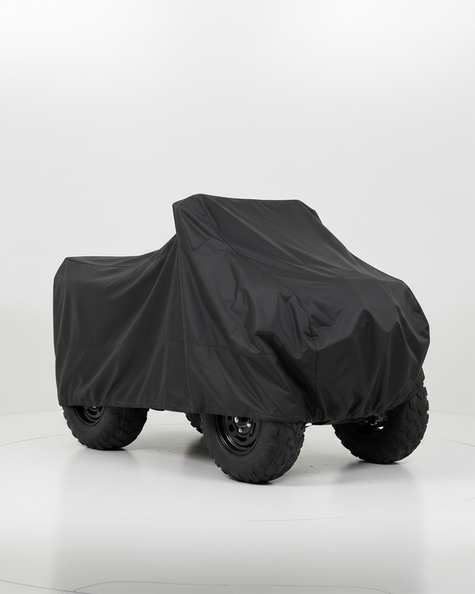
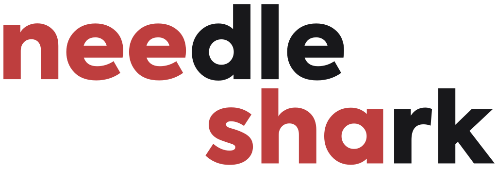
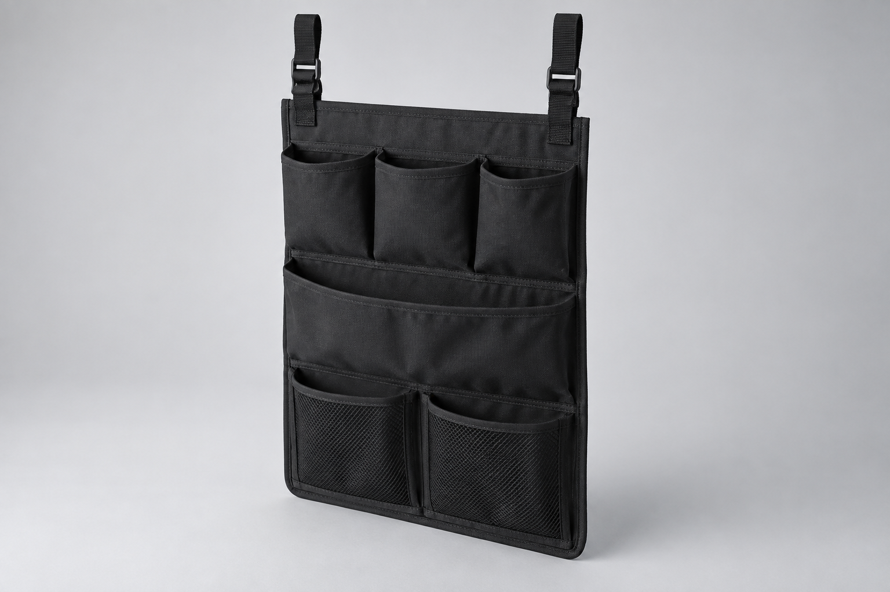
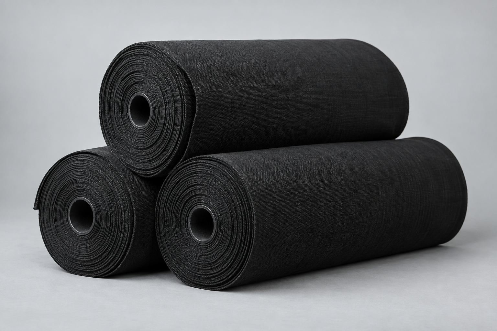

01Защитные чехлы
Для квадроциклов, техники и оборудования.
Посмотреть ассортимент
Обсудить заказ ↗ШВЕЙНОЕ ПРОИЗВОДСТВО / САНКТ-ПЕТЕРБУРГ
Производим защитные изделия из технических тканей. Готовые решения и пошив на заказ — под форму, размеры и условия работы вашего оборудования.
01 / ПРОДУКЦИЯ
Выберите готовое решение или расскажите, какое изделие нужно именно вам.

01Для квадроциклов, техники и оборудования.
Посмотреть ассортимент
02Органайзеры и другие изделия под вашу задачу.

03От подбора материала до готовой партии.
02 / ПРОИЗВОДСТВО
Техническая ткань становится защитой, когда продумана каждая деталь.
Мы — Needle Shark, швейное производство из Санкт-Петербурга. Создаём изделия нестандартных форм и подбираем материалы с учётом условий эксплуатации.
Учитываем размеры, выступающие элементы и места доступа.
Обсуждаем, от чего нужна защита, и выбираем материал и покрытие.
Продумываем швы, крепления и сборку для удобства использования.
03 / КАК МЫ РАБОТАЕМ
Последовательный процесс — от разработки конструкции до отправки готового заказа.
Разрабатываем лекала под размеры и согласованные требования.
Готовим детали из выбранного материала.
Соединяем детали, устанавливаем крепления и фурнитуру.
Проверяем готовые изделия и упаковываем заказ.
Передаём в доставку или согласованный логистический центр.
04 / ДЛЯ БИЗНЕСА
Разработаем изделие под ваше оборудование и организуем серийный пошив. Начать можно с фотографии, эскиза или описания задачи.
Обсудить партию ↗Уточняем требования, материалы и объём. Готовим предварительную стоимость.
Проектируем, отшиваем тестовый образец, уточняем детали.
Запускаем согласованную партию и отправляем удобным способом.
05 / ОБРАТНАЯ СВЯЗЬ
Needle Shark на Ozon — в оценках покупателей и количестве заказов.
продаж в нашем магазине
отзывов покупателей
06 / НАЧНЁМ С ВАШЕЙ ЗАДАЧИ
Подберём готовое решение или обсудим пошив на заказ. Если технического задания ещё нет — просто опишите вашу идею.
NEEDLE SHARK